Современный взгляд на патогенез и доказанные методы лечения.
Почему лазер — не первая линия, а инструмент в комплексной схеме.
Мелазма — это не проблема меланина.
Это хроническое заболевание
кожной экосистемы: меланоциты,
сосуды, воспаление, базальная мембрана. © В. Микрюков, 2026
Что должен знать каждый специалист
до того, как взять в руки лазер.
Меланоцит — специализированная клетка, синтезирующая меланин. Единственная клетка в коже с такой функцией. Расположен в базальном слое эпидермиса и в луковице волоса.
Меланоциты составляют 10–25% от общего числа клеток базального слоя. Один меланоцит снабжает меланином ≈40 кератиноцитов вокруг себя через дендритные отростки.
Меланины — естественный пигмент организма. Находятся не только в коже и волосах: значимые количества обнаруживаются во внутреннем ухе, отделах мозга, радужной оболочке глаза.
Основной видимый компартмент. Гранулы меланина в кератиноцитах.
Маленькие количества — участвуют в работе клеток улитки.
Substantia nigra мозга, пигментный слой сетчатки и радужная оболочка.
Азотсодержащее вещество от тёмно-коричневого до чёрного цвета. Преобразует UV-излучение в тепло и блокирует его вредное влияние практически на 100%. Мощный фотопротектор.
Красноватый, серосодержащий пигмент. Распределён диффузно, не образует гранул. Плохо защищает от UV. Более того — под действием света генерирует активные формы кислорода и свободные радикалы, повреждающие клетки.
Цвет кожи определяется накоплением гранул меланина в кератиноцитах. Кератиноцит, родившись в базальном слое, движется вверх — по пути соприкасается с дендритами меланоцита и получает порцию меланосом для защиты ядра.
Сколько меланосом попадает в кератиноцит — настолько тёмный цвет кожи получится. Количество меланоцитов у людей разных рас примерно одинаковое — отличается активность и тип меланина.
От «маски беременности»
до современного определения.
Приобретённая гиперпигментация, характеризующаяся двусторонними неравномерными коричневыми пятнами на открытых участках кожи (лицо, реже предплечья).
Хлоазма, «маска беременности» — устаревшие термины. Гормональные изменения как объяснение.
Гетерогенный патогенез: меланоциты + кератиноциты + тучные клетки + нарушение регуляции генов + васкуляризация + разрушение базальной мембраны.
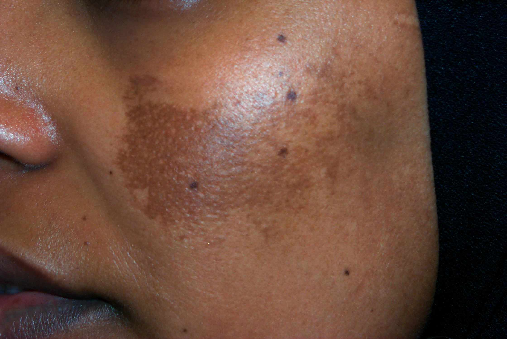
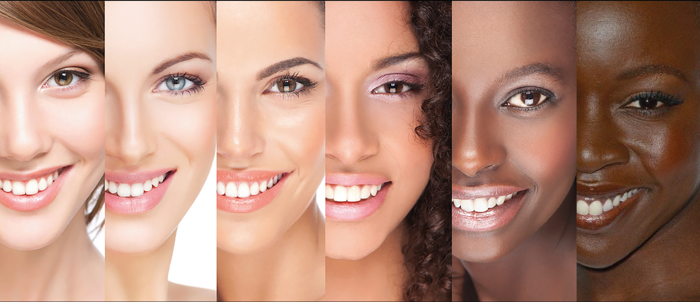
Раньше считали:
«мелазма = много меланина».
Сегодня:
мелазма = нарушение регуляции
меланогенеза + сосудистый
+ воспалительный + дермальный компоненты.
6 механизмов, которые работают одновременно.
UV-A, UV-B и видимый свет активируют меланогенез через MITF и OPN3-рецептор.
Эстроген, прогестерон, ЗГТЗаместительная гормональная терапия — приём эстрогенов в пери- и постменопаузе., КОККомбинированные оральные контрацептивы — содержат эстроген и прогестерон. Известный триггер мелазмы.. Рецепторы эстрогена в очагах мелазмы.
Семейные случаи. Этническая предрасположенность III–V фототипов.
IL-1Interleukin-1 — провоспалительный цитокин. Активирует меланоциты., TNF-αTumor Necrosis Factor alpha — фактор некроза опухоли альфа. Усиливает экспрессию тирозиназы., COXCyclooxygenase — циклооксигеназа. Фермент синтеза простагландинов., простагландины — хроническая активация меланоцитов.
VEGF, ангиогенез, тучные клетки. Повышенная сосудистая плотность в очаге.
Разрушение → миграция меланоцитов и меланина в дерму → хронические рецидивы.
Прямое повреждение ДНК кератиноцитов → P53 → POMCProopiomelanocortin — проопиомеланокортин. Белок-предшественник α-MSH и β-MSH в кератиноците. → α-MSHalpha-Melanocyte Stimulating Hormone — альфа-меланоцитстимулирующий гормон. Связывается с MC1R меланоцита → активация меланогенеза. → MC1RMelanocortin-1 Receptor — рецептор меланокортина 1 на меланоците. Связывает α-MSH. на меланоците → активация MITFMicrophthalmia-Associated Transcription Factor — главный транскрипционный фактор меланогенеза. Запускает синтез тирозиназы (TYR) и связанных ферментов (TYRP1, TYRP2). На него сходятся все сигнальные пути меланоцита. → синтез меланина.
Проникает глубже в дерму. Активирует фибробласты, индуцирует SCFStem Cell Factor — фактор стволовых клеток. Активирует c-KIT на меланоците → меланогенез. и c-KITc-KIT receptor — тирозинкиназный рецептор меланоцита для SCF., усиливает пигментацию через ROSReactive Oxygen Species — активные формы кислорода. Окислительный стресс, повреждают ДНК и стимулируют меланогенез.-механизм.
Хроническое воздействие UV — главный триггер и поддерживающий фактор мелазмы. Без фотозащиты любое лечение бессмысленно.
Долгое время считали, что видимый свет «безопасен». Сегодня доказано: видимый свет (особенно сине-фиолетовая часть, 415 нм) поддерживает и усиливает мелазму через рецептор OPN3Opsin-3 — фоторецептор-опсин на меланоците. Активируется синим/фиолетовым видимым светом (415 нм) → запускает меланогенез. Поэтому при мелазме нужен SPF с блокировкой видимого света (Fe₂O₃). на меланоците.
Опсин-3 — фоторецептор меланоцита. Активируется синим/фиолетовым светом → Ca²⁺ → CAMKIICa²⁺/Calmodulin-dependent Protein Kinase II — кальций-/кальмодулин-зависимая протеинкиназа II. Передаёт кальциевый сигнал на CREB. → CREBcAMP Response Element-Binding protein — транскрипционный фактор, фосфорилируется PKA/CAMKII и активирует промотор MITF. → MITF.
Обычный SPF блокирует только UV. Нужны железооксидные фильтры (Fe₂O₃) и физические блокаторы (ZnO, TiO₂), которые блокируют видимый свет.
До 70% беременных — гиперпигментация. У части — стойкая мелазма после родов.
Эстроген и прогестерон → активация эстрогеновых рецепторов в меланоцитах очага → усиление меланогенеза.
В коже с мелазмой повышена экспрессия ERα, ERβ и PR по сравнению с прилежащей здоровой кожей.
| Утверждение | Статус |
|---|---|
| Беременность провоцирует мелазму | доказано |
| КОККомбинированные оральные контрацептивы — содержат эстроген и прогестерон. Известный триггер мелазмы. с высокими дозами эстрогена усугубляют | доказано |
| В очагах мелазмы повышены ER/PR | доказано |
| Отмена КОККомбинированные оральные контрацептивы — содержат эстроген и прогестерон. Известный триггер мелазмы. всегда улучшает течение | противоречиво |
| Стресс-кортизол напрямую вызывает мелазму | не доказано |
| Щитовидная железа — самостоятельный триггер | не доказано |
В коже с мелазмой хронически повышены:
Современный взгляд: мелазма частично является воспалительным заболеванием кожи, а не «просто пигментным феноменом».
Хроническое воздействие UV + воспаление активируют MMP-2 и MMP-9Matrix Metalloproteinases — матриксные металлопротеиназы. Разрушают коллаген IV базальной мембраны → меланоциты и меланин «спускаются» в дерму → формируется дермальный компонент и хронические рецидивы. (матриксные металлопротеиназы), которые разрушают базальную мембрану.
Через повреждённый барьер меланоциты и свободный меланин мигрируют в верхнюю дерму.
Дермальные макрофаги поглощают меланин → формируется дермальный компонент мелазмы, плохо отвечающий на лечение.
Дермальная фракция — главная причина устойчивости и рецидивов. Эпидермис восстанавливается, дерма — нет.
По модели течения мелазма ближе к розацеа и атопическому дерматиту, чем к простому косметическому дефекту: лечится — но склонна к рецидивам.
Хроническое сосудисто-воспалительное заболевание. Параллель: воспаление + сосуды.
Хроническое иммунное воспаление с обострениями. Параллель: триггеры + ремиссии + поддержка.
Хроническое нарушение пигментной регуляции + сосуды + воспаление. Тот же паттерн.
Главный триггер. Любое лето без фотозащиты — обострение.
Сине-фиолетовый спектр от экранов и LED — поддерживает.
Любая травма кожи: пилинги, агрессивные процедуры, ожоги.
Беременность, КОККомбинированные оральные контрацептивы — содержат эстроген и прогестерон. Известный триггер мелазмы., ЗГТЗаместительная гормональная терапия — приём эстрогенов в пери- и постменопаузе.. Часто провоцируют новые волны.
Поэтому «вылечить мелазму» нельзя — её можно вывести в ремиссию и удерживать. Это базовая концепция, без которой невозможно правильно консультировать пациента.
Клиника, лампа Вуда, дерматоскопия, VISIAVISIA — система фотофиксации кожи в кросс-поляризованном и UV-свете. Позволяет объективно оценивать динамику пигмента и сосудов..
Лоб, нос, верхняя губа, подбородок. Самый частый тип — около 65% случаев.
Только щёки. ≈ 20% случаев. Часто сочетается с фотостарением.
Угол нижней челюсти. ≈ 15%. Часто сопутствует пери-/постменопаузе.
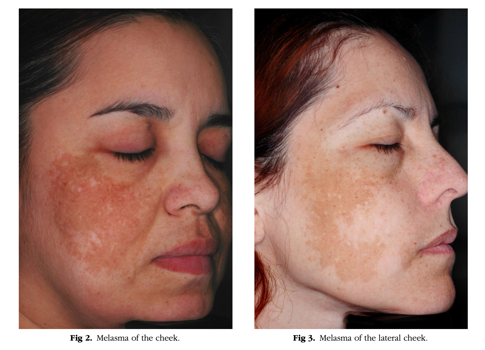
Фотозащита → наружная терапия → транексам → лазер.
Именно в таком порядке.
№1 в лечении мелазмы —
фотозащита и отбеливающая терапия.
Не лазер. Международные консенсусы 2014–2023
Минимум SPF 30 UVA/UVB. Многие гайдлайны рекомендуют SPF 50+. Регулярное обновление каждые 2–3 часа.
Оксид цинка (ZnO) и диоксид титана (TiO₂) — основа выбора при мелазме. Блокируют UV и часть видимого света.
Iron oxide (Fe₂O₃) — единственная группа фильтров, эффективно блокирующая видимый свет. Современный стандарт.
Недавние исследования: SPF с блокировкой видимого света (Fe₂O₃) даёт значимо лучший терапевтический эффект при мелазме, чем обычный UVA/UVB SPF.
Поглощает синюю и фиолетовую часть видимого спектра (400–500 нм). Других подходящих фильтров для видимого света практически нет.
Железооксидные фильтры дают лёгкий тонирующий оттенок — кремы с ними обычно тонированные. Это плюс: маскируют пятна по ходу лечения.
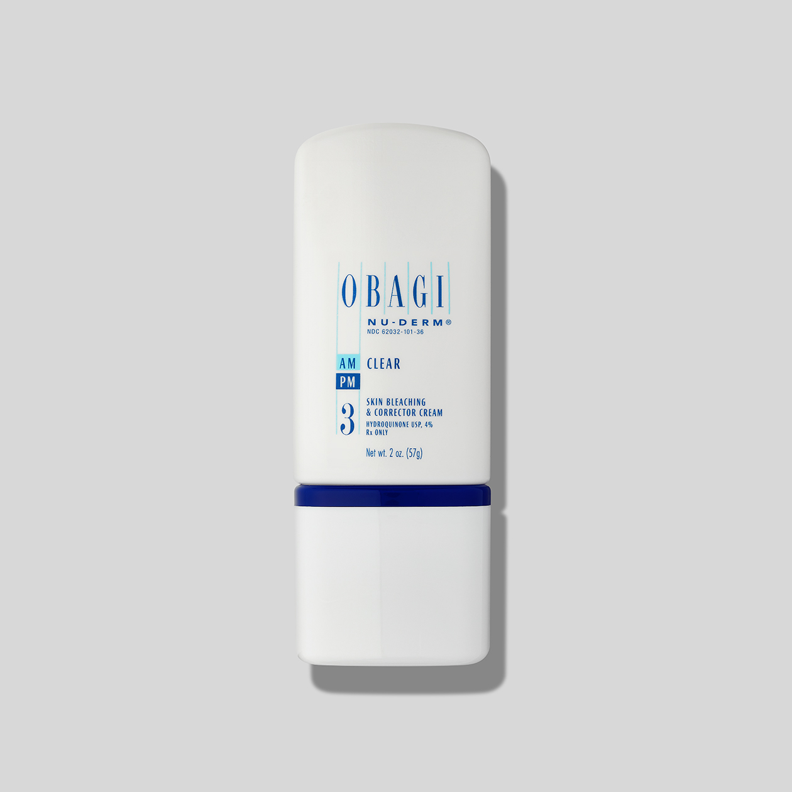
Описана в 1975 г. Albert Kligman. До сих пор — наиболее эффективная схема в международных обзорах.
Блок тирозиназы. Снижение меланогенеза.
Ускоряет десквамацию, усиливает проникновение гидрохинона.
Подавляет воспаление от гидрохинона и третиноина.
В РФ — практически недоступна готовым препаратом (Tri-Luma не зарегистрирован).
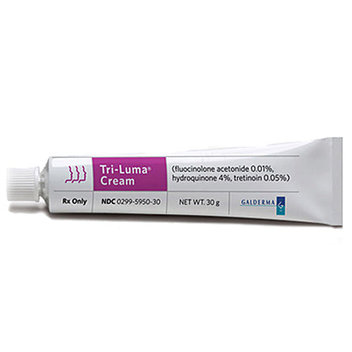
| Активный | Механизм | Где применяется |
|---|---|---|
| Азелаиновая 15–20% | Ингибитор тирозиназы, противовоспалительный, антимикробный | Скинорен, Азелик. Первая линия в РФ. |
| Койевая 1–4% | Хелатор меди в активном центре тирозиназы | Сыворотки, кремы, мезопрепараты |
| Арбутин 1–7% | Гликозилированный гидрохинон, мягкий ингибитор тирозиназы | Сыворотки. Часто в комбинациях. |
| Цистеамин 5% | Эндогенный антиоксидант. Блокирует тирозиназу и пероксидазу | Cysteamine cream (Cyspera). Сильный, но с запахом. |
| Транексамовая 3–5% | Антифибринолитик + анти-VEGFVascular Endothelial Growth Factor — фактор роста эндотелия сосудов. + противовоспалительный | Сыворотки, мезо, оральные формы |
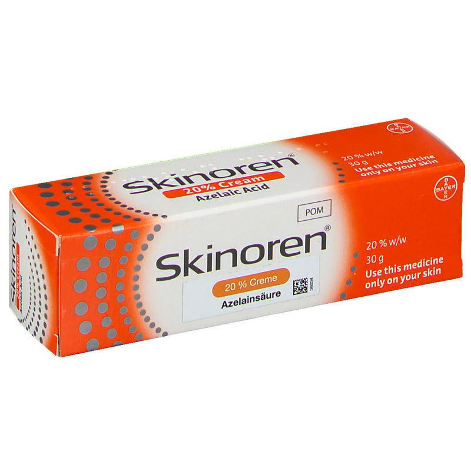
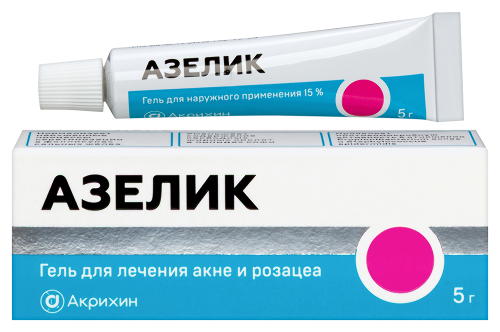
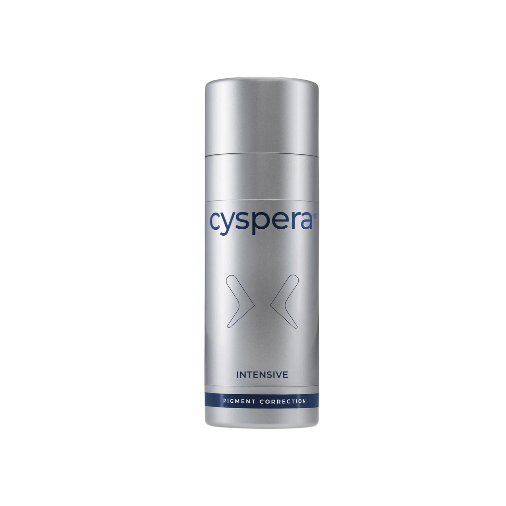
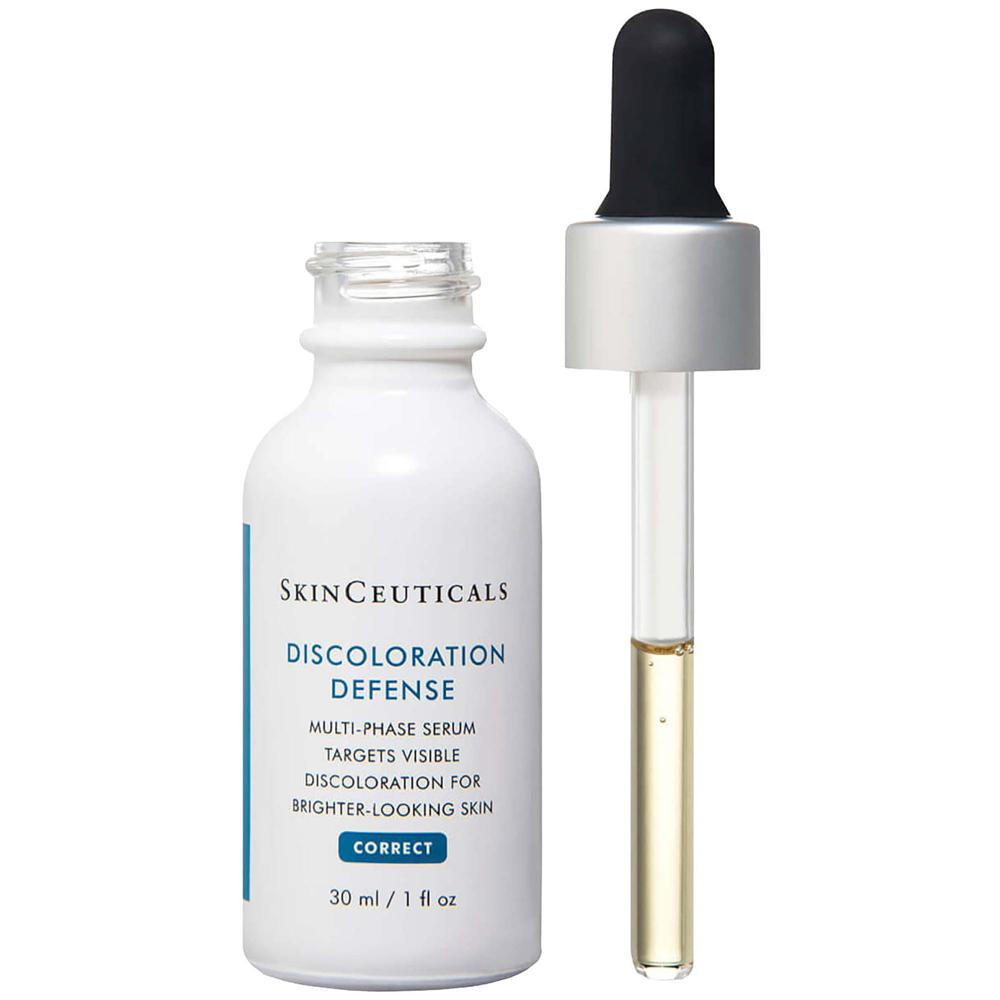
Транексамовая кислота вышла за рамки антифибринолитика и стала одним из самых обсуждаемых методов в дерматологии последних 10 лет.
Блокирует плазмин → снижение PGE2Prostaglandin E2 — простагландин E2. Прямой стимулятор меланогенеза через EP-рецепторы меланоцита., AA → снижение меланогенеза.
Снижает VEGFVascular Endothelial Growth Factor — фактор роста эндотелия сосудов. Стимулирует ангиогенез. Повышен в очагах мелазмы — обоснование для транексамовой кислоты и сосудистых лазеров., уменьшает ангиогенез — работает на «сосудистый компонент» мелазмы.
Уменьшает паракринную стимуляцию меланоцитов кератиноцитами через α-MSHalpha-Melanocyte Stimulating Hormone — альфа-меланоцитстимулирующий гормон. Связывается с MC1R меланоцита → активация меланогенеза./ET-1Endothelin-1 — эндотелин-1. Сильный паракринный активатор меланоцитов; выделяется кератиноцитами после UV..
Сыворотки. Безопасный вариант на длительном курсе. Эффект ниже системного, но без рисков.
Внутрикожные инъекции 4 мг/мл, курс 6–12 процедур. Хороший компромисс эффективности и безопасности.
Системный приём 8–12 недель. Самая высокая эффективность — но требует исключения противопоказаний.
Главное противопоказание — тромбогенный риск: тромбозы в анамнезе, КОККомбинированные оральные контрацептивы — содержат эстроген и прогестерон. Известный триггер мелазмы. с риском, тромбофилии, активные сосудистые заболевания. Скрининг по анамнезу + при необходимости коагулограмма.
Самый «соблазнительный» инструмент
и самая частая причина рецидивов.
Лазер при мелазме нацелен на избыток пигмента,
но не влияет на основные звенья патогенеза.
Поэтому в монотерапии
часто возникают рецидивы и обострения. © В. Микрюков, 2026
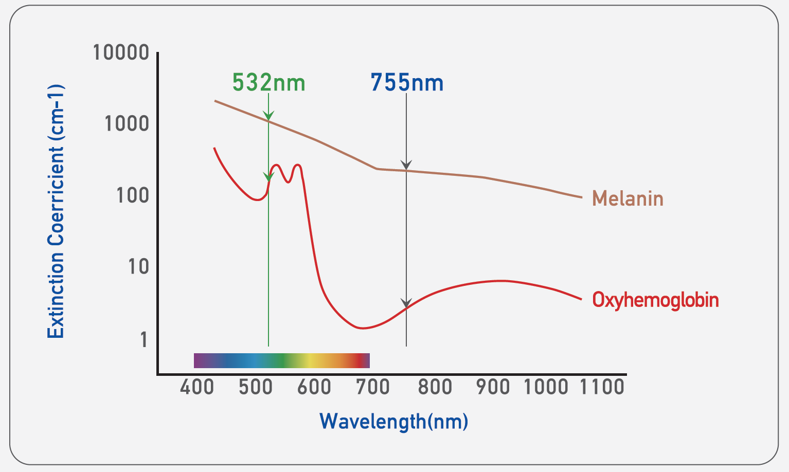
Чтобы получить нужную плотность энергии на компактном лазере — пятно сжимается до 1,5–2 мм. Это даёт:
Вывод: 532 нм Nd:YAGNeodymium-doped Yttrium Aluminum Garnet — лазерная среда на основе кристалла иттрий-алюминиевого граната с примесью неодима. Длины волн 1064 нм и 532 нм. QSQ-switched — режим модуляции добротности. Наносекундный импульс. как монотерапия мелазмы — не работает. На компактных лазерах — практически всегда ухудшает ситуацию.
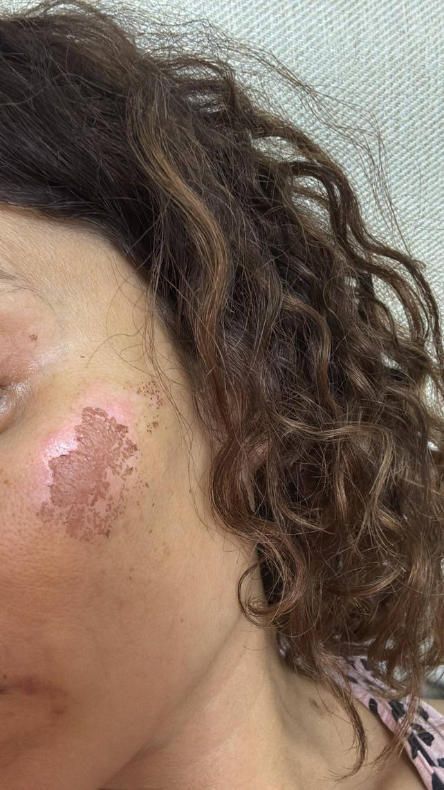
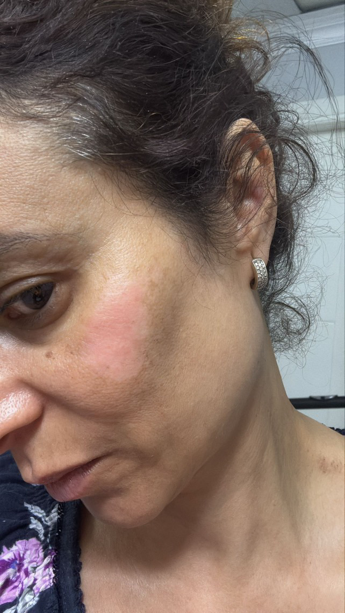
Goldberg & Metzler (1999) — первыми предложили низкоинтенсивное воздействие Nd:YAGNeodymium-doped Yttrium Aluminum Garnet — лазерная среда на основе кристалла иттрий-алюминиевого граната с примесью неодима. Длины волн 1064 нм и 532 нм. для фотостарения. Kim et al — показали выборочное разрушение меланосом без гибели клеток на коже рыбок данио. Так родилась концепция Laser Toning.
Отсечение длинных дендритных отростков гиперактивных меланоцитов — функциональное подавление без гибели клетки.
Меланосомы и гранулы меланина внутри меланоцита разрушаются, клеточная мембрана и ядро остаются целы.
Без гибели клеток — меньше выброса PGE2Prostaglandin E2 — простагландин E2. Прямой стимулятор меланогенеза через EP-рецепторы меланоцита. и цитокинов — меньше шансов обострения мелазмы.
На компактных одно-двухкристальных
Nd:YAGNeodymium-doped Yttrium Aluminum Garnet — лазерная среда на основе кристалла иттрий-алюминиевого граната с примесью неодима. Длины волн 1064 нм и 532 нм. Q-switchQ-switch — режим модуляции добротности. Даёт сверхкороткий импульс (наносекунды) с высокой пиковой мощностью. Фотомеханическое разрушение пигмента без термического ожога. лазерах качественно выполнить
Laser Toning при мелазме
практически невозможно.
Это фактор риска: обратный эффект,
усиление пигментации,
стойкая каплевидная депигментация.
Конфетти-гипопигментация / пунктированная лейкодермия — самое тяжёлое осложнение Laser Toning'а. Может развиться уже на втором сеансе. На коже мелазмы практически не поддаётся лечению.
Hoffbauer Parra et al.: значимое улучшение во время курса у всех 20 пациентов с латиноамериканскими фототипами. У 81% — рецидив после прекращения. Аналогичная картина в нескольких других исследованиях.
Мелазма — не поле для экспериментов.
Понимайте патогенез — выбирайте тактику.
Лазер — поддерживающий инструмент
в руках того, кто знает физику. © В. Микрюков, лекция для клуба ЛазерПРО, 2026